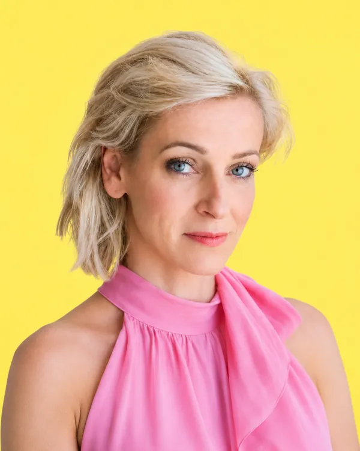

Martina Klusáková
Podnikatelka, majitelka cukrárny Cukrle a podporovatelka místních výrobců
V Šumperku žiji se svou rodinou a právě tady jsem si splnila svůj podnikatelský sen. Po letech práce v bankovnictví jsem se rozhodla vydat vlastní cestou a vybudovala cukrárnu Cukrle, která si získala přízeň zákazníků i prestižní ocenění Regionální potravina. Věřím, že poctivá práce, kvalita a osobní přístup mají smysl a že právě na těchto hodnotách může růst nejen úspěšné podnikání, ale i naše město. Kandiduji, protože chci přispět k tomu, aby byl Šumperk živým městem plným příležitostí pro místní podnikatele, řemeslníky i rodiny. Blízká jsou mi témata podpory lokálních výrobců, oživení centra města, kvalitní gastronomie, cestovního ruchu i komunitního života. Věřím, že když město vytváří dobré podmínky pro podnikání, kulturu a setkávání lidí, stává se místem, kam se obyvatelé i návštěvníci rádi vracejí.